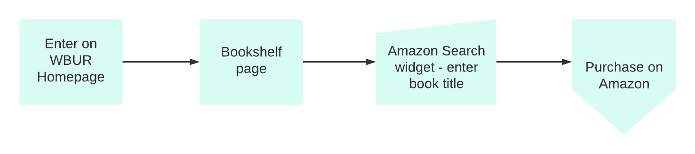
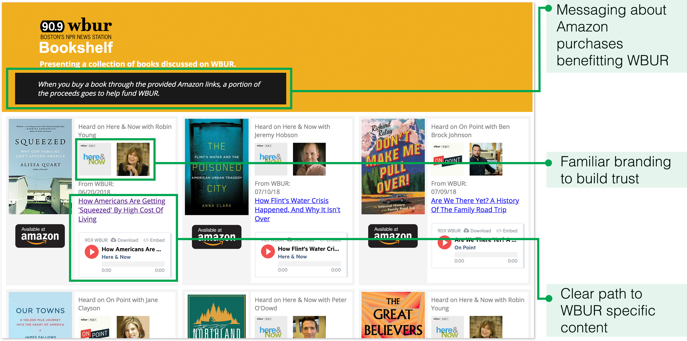
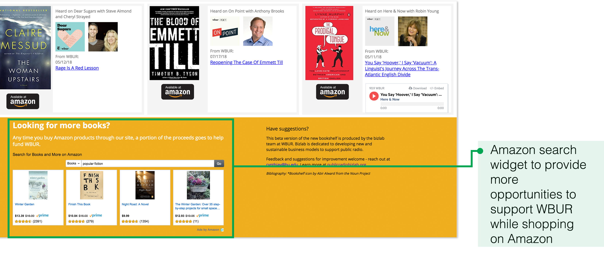
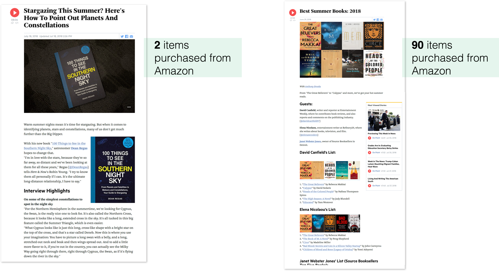

This project examines the question: can we design a book-finding experience
for WBUR listeners that compels them to purchase books?
The WBUR Bookshelf is a section of www.wbur.org that presents all books
discussed on WBUR radio programs.
WBUR provides rich book-related content that can be associated with
Amazon’s affiliate marketing program, and thus help raise money for public radio.
My Design Role
Visual Design
Prototyping
User Research
The Team
1 UX Director
1 Front-end Developer
1 Digital Strategist
1 Copy Editor
1 UX Designer (me)
Deliverables
Wireframes
InVision Prototype
HTML/CSS Prototype
User Tests
User Interviews
Online Survey
Tools
Invision
Sketch
HTML/CSS
Google Analytics
Inspectlet
Survey Monkey
This project was part of my summer internship at WBUR’s BizLab – a business innovation lab geared toward running quick UX experiments to identify sustainable revenue streams to fund public radio.
Quantitative Findings
take book recommendations from radio
cite friends and family as their favorite resource for book recs
friends and family is the top resource for book recs
read on a daily basis
listen to public radio on a daily basis
website entrances through program-specific or the wbur homepages are 2x more engaged
*based on 208 survey responses and Google Analytics data
Qualitative Findings
Amanda
As a daily WBUR listener, I want to find a book that I heard about while listening to one of of my favorite WBUR programs so that I can read it during my commutes.

Amanda's user flow
Rob
The local bookstore doesn’t carry the next book I want to read, but Amazon does. As a WBUR fan, I want to support WBUR while I shop for books on Amazon so I feel less guilty.
Rob's user flow
The New York Times
NPR Book Concierge
Boston Public Library
Key Finding
There is an opportunity for us to associate books more closely with the radio programs that our listeners are familiar with, which will make our recommendations more personal and compelling
Prepared quick sketches and wireframes to present internally to the team.
Homepage
Details hover
Extended book details

Homepage

Details hover

Extended book details
Internal Feedback
Not enough WBUR content to differentiate from sites like Goodreads and Amazon
Limited resources, explore simpler solutions
Next, I created two prototypes to explore different layouts that present book related content. To gather more user feedback, I recruited six participants for user tests and interviews.
A.

B.

User Feedback
Associating books with photos of radio hosts and specific brands will make the book more appealing
Messaging about Amazon purchases benefitting WBUR should be made more prominent; it neutralizes negative attitudes towards shopping on Amazon
It is not clear that content provided is WBUR specific, it looks like a generic book synopsis
Having the option to play related audio segments is a nice to have
As part of a 7-day experiment, we launched responsive prototype and directed traffic from the wbur.org homepage. This was implemented with Google Analytics and Inspectlet (a screen recording tool) to help us analyze user behavior and measure results.
See the Coded Prototype Coded prototype - top of page
Coded prototype - bottom of page

Prototype in action
Results
4,247 bookshelf pageviews
468 clicks to Amazon
10 items purchased from Amazon
40% of purchases directed from Amazon search widget
While the WBUR bookshelf was designed based on user needs, 10 items purchased over the course of a 7-day experiment did not justify further investment. As a next step, we decided to polish some existing book related content and run additional experiments to gauge conversion rates for different book content layouts.
Comparing book sales from a book specific article (left) and summer reading list (right)
The Summer Reading List resulted in 90 purchases after a 7-day long experiment, making it the best converting layout by far.
The next iteration of the Bookshelf should incorporate the following key findings and present in a list like format. This will help us meet business objectives while better serving our users.
Reiterating Important Findings
Users want to know what their favorite radio hosts are reading
Pictures of hosts help users associate book recommendations with trusted figures
Messaging about Amazon purchases benefitting WBUR neutralizes negative attitudes towards shopping on Amazon
Amazon search widget received high engagement